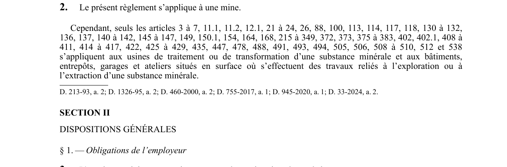

art-2-RSSM : champ application règlement mines
Un article du wiki ⚖️ Recueil législatif
En bref
Le règlement s'applique à toute mine ; toutefois, seuls certains articles expressément énumérés (art. Il s'agit d'une obligation.
- 3 à 7, 11.1, 11.2, 12.1, 21 à 24, 26, 88, 100, 113.
- liste limitative d'articles applicables aux usines de traitement et bâtiments de surface.
🌐 LegisQuébec · 📄 PDF officiel
Texte officiel : capture du PDF
{kind=link}

Toucher l'image pour l'agrandir🔗 Voir art. 2 RSSM dans le PDF (page 7)
Version : texte officiel du RSSM (RLRQ c. S-2.1, r. 14), à jour au 1er mai 2024 — Éditeur officiel du Québec
Voir aussi
- art. 1 : définitions générales RSSM · l'article 1 définit l'ensemble des termes techniques employés dans le règlement, notamment : accessoire de sautage, agent de sautage, appareil de levage, appareil de protection respiratoire autonome, câble armé, circuit principal de ventilation, circuit secondaire, cuffat.
- art. 3 : respect des normes du règlement · obligation : l'employeur doit respecter les normes du règlement.
- art. 4 : harnais chute plus 3 mètres · champ d'application : le port d'un harnais de sécurité est obligatoire pour le travailleur exposé à une chute de plus de 3 m (9,8 pi) de sa position de travail, sauf lorsqu'il n'utilise qu'un moyen d'accès ou de sortie ou s'il est protégé par un filet de sécurité.
- ⚖️ Loi habilitante : LSST
- ↑ Index du bloc : Dispositions générales
Pages qui pointent ici (4)
- art-1-RSSM : définitions générales RSSM Recueil législatif
- art-3-RSSM : respect des normes du règlement Recueil législatif
- art-4-RSSM : harnais chute plus 3 mètres Recueil législatif
- RSSM : Dispositions générales (art. 1 à 11) Recueil législatif